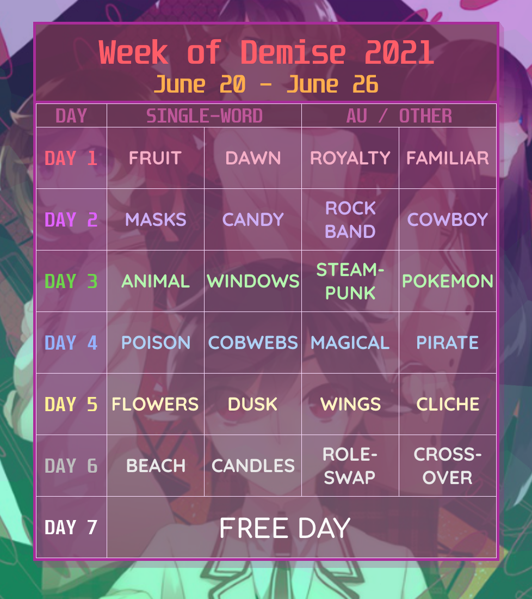
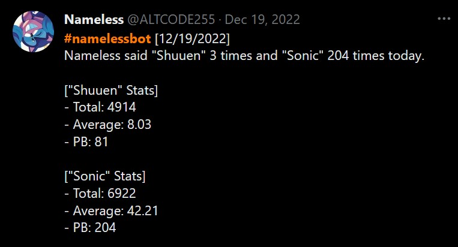
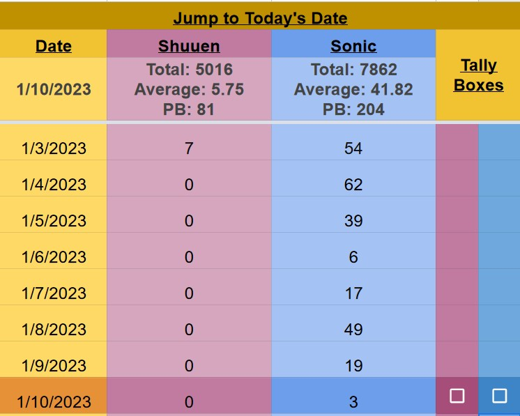
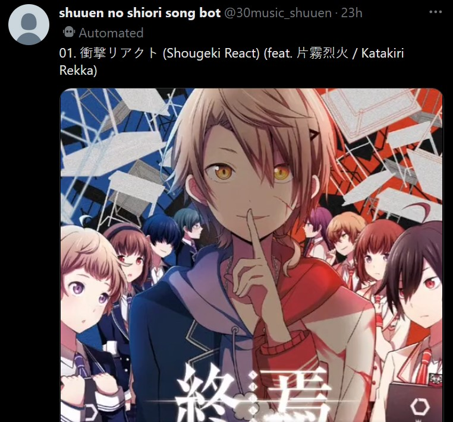
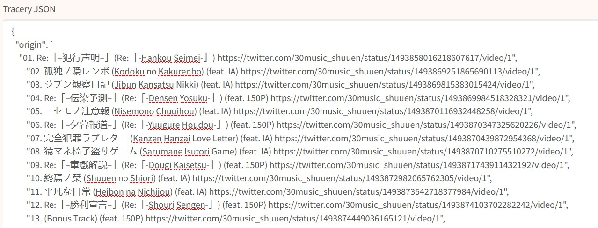

*Click on image to be redirected to its source
Creative Writing
[Sonic the Hedgehog] So I'm an "ordinary man" (Please pretend that's how things are) (11.9k words) - DEC 30 2022
...The glass tower unnerves Sonic unlike anything ever has before, to the point that he refuses to sneak even a glance of it over his shoulder, afraid that if he does, he'll be drawn in like the victim of a siren's melody, powerless as he drowns in its contents...
(In which Sonic the Hedgehog is forced to confront memories he has been running from for a long, long time.)
[Shuuen no Shiori] Monologue to a Silenced Storyteller (1.7k words) - MAR 8 2023
E-noru visits the hospital, and has a one-sided conversation with someone who can't respond.
He never truly knew his uncle, yet he lives the consequences of his story.
Coding(-adjacent) Projects / Other Personal Endeavors
More small coding projects can be found on my Github page.
| Project |
Preview |
Week of Demise (Shuuen no Shiori Art Week) - SUMMER 2019 -> SUMMER 2021
Art week hosted every year with a choice of different single-word prompts. |

|
|
Shuuen no Shiori Masterpost / Guide -
OLD: NOV 4 2019 -> MAR 21 2023
NEW: MAR 22 2023 -> PRESENT
Compilation of Shuuen masterlists to help old and new fans get into the series. Made with Carrd. Ported to Github Pages (HTML)!
|
 |
The S-Word Counter / #namelessbot (Twitter Bot) - JAN 17 2022 -> PRESENT
Twitter bot that, every night, reports the number of times I've said the words "Shuuen" or "Sonic" that day. Data is extracted from a Google Sheet, automation done using Microsoft Power Automate. Some scripting in the Google Sheets itself using Google Apps Script (Javascript). |


|
30s Shuuen Music (Twitter Bot) - FEB 15 2022 -> PRESENT
Twitter bot that posts trimmed clips of Shuuen no Shiori tracks every hour. Made with Cheap Bots Done Quick. |


|
FISHEYE 🔍🐠 (Discord Bot) - APRIL 9 2022 -> PRESENT
A (currently semi-public, used in Shuuen no Shiori discord) Discord bot that functions as a tool to notify / DM users when a keyword of their choosing is mentioned in any message. Coded in Python using discord.py. |
 |